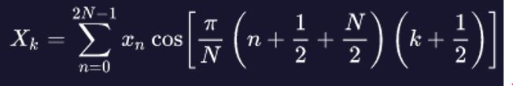
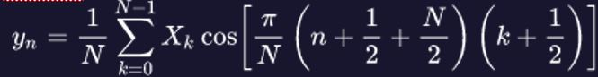
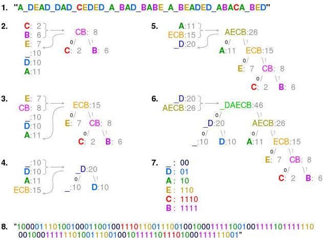

WMA es un formato de archivo de audio. Cada archivo WMA almacena la pista de audio junto con los metadatos
relacionados, como el nombre de la pista, el número de la pista, el autor, el género musical, etc. Los
archivos WMA utilizan el formato de codificación Advanced System Format (ASF), también utilizado por los
archivos WMV y ASF. Por lo general es un formato que suele utilizarse en diversas páginas webs para la
preescucha o muestreo de
música, pero también suele venir incorporado en algunos modelos de reproductores portátiles de música
digital.
El primer codec WMA se basó en trabajos anteriores de Henrique Malvar y su equipo. Malvar fue investigador y
gerente del Signal Processing Group en Microsoft Research, cuyo equipo trabajó en
MSAudio.
En su lanzamiento, Microsoft afirmó que WMA producía archivos que tenian la mitad del tamaño que archivos
MP3 con calidad equivalente.
La empresa RealNetworks cuestionó públicamente la calidad superior en comparación con su producto
RealAudio. La primera códec finalizada fue referida inicialmente como MSAUDIO 4.0 y fue rechazada por
diversas
personas.
Básicamente, la compresión WMA utiliza un codificador basado es MDCT (Transformada discreta del coseno
modificada). El algoritmo está diseñado para ser ejecutado en bloques consecutivos de un archivo grande.
El MDCT es una transformación similar a Fourier, con la propiedad de que es solapada, es decir, que los
bloques separados a ser transformados coinciden mitad del primero con la mitad del segundo.
Como es una transformación solapada, una MDCT es distinta a otras transformaciones relacionadas con Fourier,
en el sentido de que una MDCT tiene la mitad de entradas que salidas.

La función inversa utiliza la propiedad de ser solapada para causar que los errores sean cancelados entre
bloques, recuperando el archivo inicial.

Las muestras de punto flotante resultantes de la codificación MDCT son descompuestas en coeficiente y
exponente, y todas son codificadas independientemente con codificación Huffman, un algoritmo para compresión
de datos.

El formato puede seguir tanto técnicas de compresión con pérdida como sin pérdida. Puede reducir
drásticamente el tamaño de un archivo de audio al tiempo que conserva la mayoría de los datos.
Cuando sigue una comprensión con pérdida suele reducir su tamaño hasta un 60%